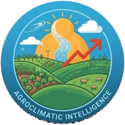
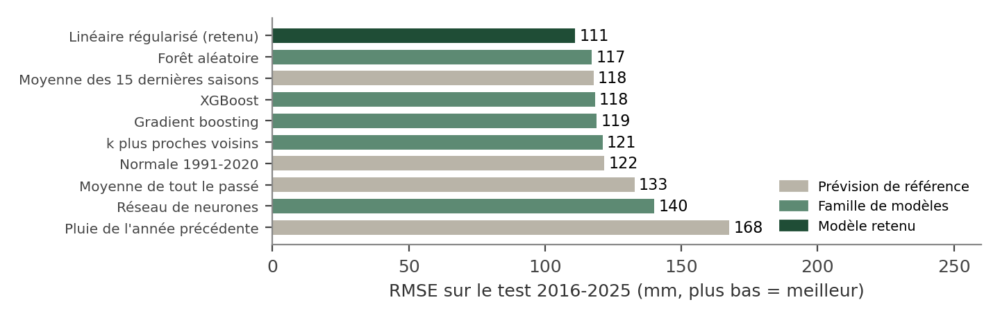
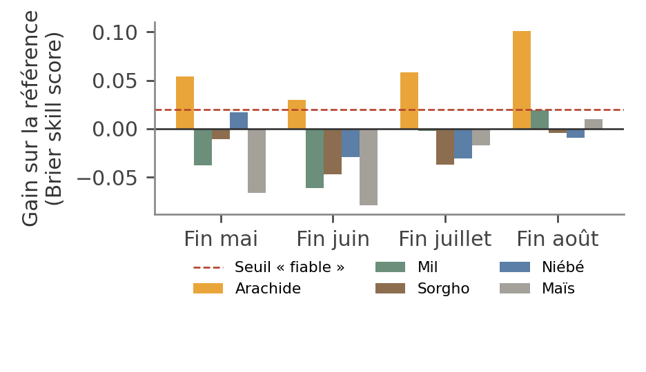
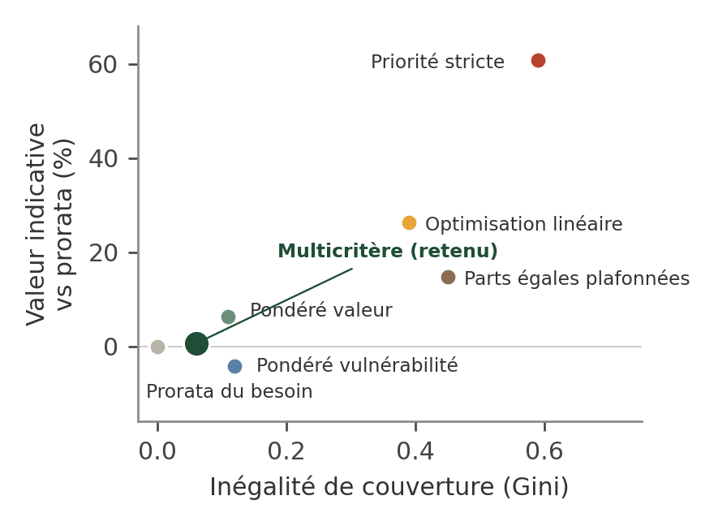
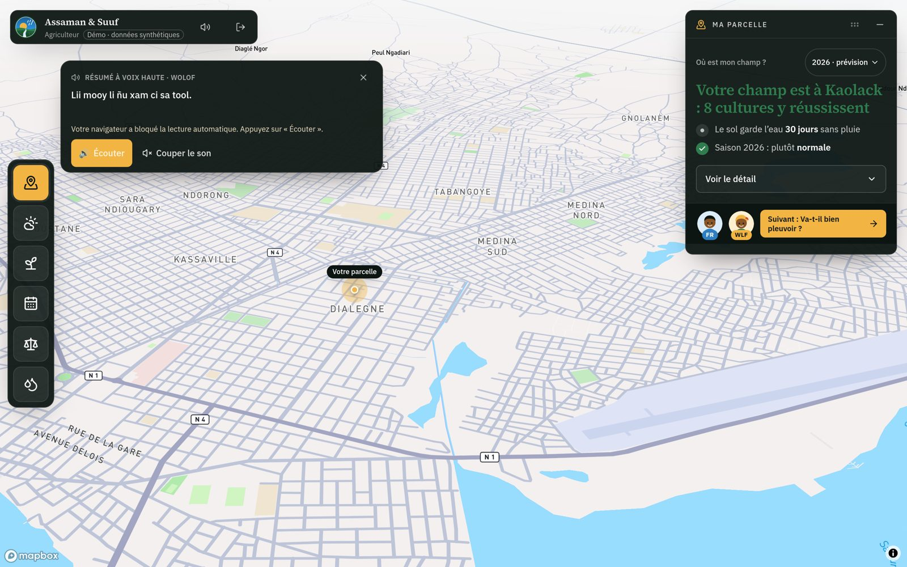
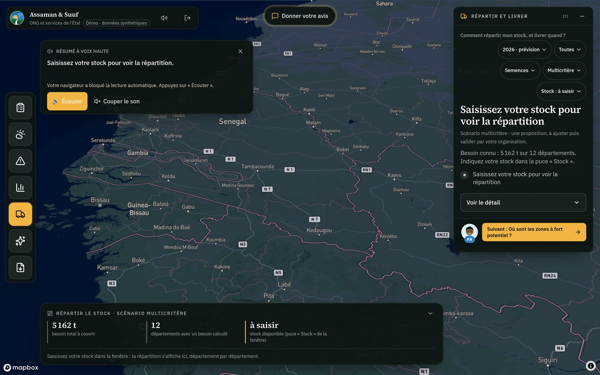

Le problème. Au Sénégal, l'agriculture est surtout pluviale. Avant de semer, un producteur doit deviner si la saison sera courte ou longue, abondante ou faible, pour choisir la culture, la variété (cycle court ou long), la date de semis et les intrants. Une ONG ou un service de l'État doit, de son côté, décider où envoyer un stock limité d'engrais ou de semences. Les données existent (satellites, statistiques agricoles, sols) mais sont dispersées et illisibles pour ces décideurs.
Notre réponse. Une plateforme web (carte, mobile d'abord) qui croise climat, sol et rendements département par département, avec deux portes d'entrée : Agriculteur (« Ma parcelle », « Va-t-il bien pleuvoir ? », « Que semer ? », « Quand semer ? », « Combien m'en faut-il ? ») et ONG et services de l'État (« Où agir en priorité », « Alerte récolte », « Répartir un stock », dossier PDF). Derrière les écrans : un entrepôt Snowflake modélisé avec dbt, trois modèles de prévision et un moteur de répartition, une API FastAPI à réponses précalculées, et une voix en wolof.
Principe directeur. Une valeur inconnue n'est jamais affichée comme zéro, chaque prévision porte sa fourchette et sa fiabilité, et chaque modèle est comparé à une prévision simple sur des années entières. Quand un modèle ne fait pas mieux que la référence, un drapeau dans ses sorties (rendement_fiable, alerte_fiable) empêche l'application de le présenter comme une prévision.
Plan. 1. Données (sources, volume, prétraitement, qualité, conformité) · 2. Méthode (architecture, outils, modèles, choix justifiés) · 3. Résultats (métriques, captures, limites, pistes) · Annexes (définitions des mesures, tables servies, reproductibilité).
Toutes les sources sont publiques ou institutionnelles. Aucune ne contient de donnée personnelle : ce sont des grilles satellitaires, des indices climatiques et des statistiques agrégées au département.
| Thème | Source | Nature | Période | Licence / usage |
|---|---|---|---|---|
| Pluie journalière | CHIRPS (Climate Hazards Center, UC Santa Barbara) | Grille satellite + stations, 0,05°, agrégée par département | 1981-2025 | Domaine public |
| Températures, évaporation, humidité | NASA POWER | Réanalyse journalière ; secours de CHIRPS pour Guédiawaye | 1981-2025 | Ouverte, citation |
| Humidité du sol avant saison | ESA CCI Soil Moisture | Grille satellite, avril-mai | 1981-2025 | Ouverte, citation |
| Températures des océans | NOAA (ONI, TNA, TSA, AMO) | Indices mensuels, moyennes mars-mai | 1981-2026 | Domaine public |
| Sols | SoilGrids (ISRIC) | Texture, pH, réserve utile, carbone, par département | — | CC BY 4.0 |
| Rendements, superficies | DAPSA (ministère de l'Agriculture) via HarvestStat et FEWS NET | Statistiques par département × campagne × culture | 1981-2021 | Ouverte, citation |
| Rendements nationaux | FAOSTAT | Contrôle de cohérence | — | CC BY-NC-SA |
| Insécurité alimentaire | Cadre harmonisé (CILSS) via HDX | Phases 1 à 5 et populations par département | 2014-2026 | CC BY |
| Doses d'intrants | IFDC-CORAF (Paquets d'intrants) ; fiches ISRA | Doses par zone × culture, à confirmer | — | Citation |
| Prix des intrants | APS (sept. 2025) ; circulaire du ministère (30 avril 2026) | Prix de cession et subvention par sac | 2026 | Information publique |
| Découpage administratif | GADM 4.1 ; zones agroécologiques (référentiel projet) | Codes et contours des 45 départements | — | GADM : non commercial |
Le grain commun est le département (45, clé GADM SEN.10.1_1), regroupé en 14 régions et 6 zones agroécologiques, deux découpages parallèles (Louga, Matam et Tambacounda couvrent deux zones). Le temps est découpé en campagnes (1981-2025) et en décades de 10 jours (la saison des pluies va de la décade 16 à la décade 30).
Les données brutes chargées dans SALTIS.RAW proviennent de 22 tables sources. Après transformation : environ 100 000 lignes de faits, 78 000 lignes de marts servies à l'application, et 75 600 lignes de prévisions produites par les modèles. C'est un petit volume, ce qui justifie une architecture sobre (section 2).
| Table (exemples) | Grain | Lignes |
|---|---|---|
fact_pluviometrie_decadaire | département × année × décade | 71 280 |
fact_rendement_departement | département × campagne × culture | 22 905 |
| dont rendement observé | 8 040 | |
fact_saison_departement | département × campagne | 2 025 |
mart_ml_prevision_pluie | département × année (entraînement) | 2 025 |
mart_choix_cultures | département × culture × cycle | 1 710 |
mart_territoires_agrodistrib | département × culture cultivée | 345 |
risque_semis.csv (modèle 4) | dép. × année × culture × décade | 59 136 |
La chaîne suit trois couches dbt sur Snowflake, des données brutes aux tables prêtes à l'emploi :
ingestion/, Python) : téléchargement des grilles et des tableaux, agrégation spatiale par département (moyenne des pixels CHIRPS, NASA POWER pour les départements sans pixel terrestre), calcul des variables agroclimatiques : début et fin de saison, séquences sèches, SPI, décades sèches (< 10 mm), normales 1991-2020, couverture en eau des cycles (méthode FAO-56 décadaire).Contrôles automatiques. 345 tests dbt (unicité des clés, valeurs non nulles, valeurs admises, relations entre tables) tournent à chaque construction. L'API valide en plus chaque ligne contre un contrat Pydantic au chargement : un mart hors contrat fait échouer le chargement, et la version précédente reste servie.
Règles de traitement. Une valeur manquante reste vide, jamais remplacée par 0 ; les totaux partiels le signalent (valeurs_manquantes). Chaque réponse de l'API porte ses limites d'usage (meta.avertissements).
Défauts connus, documentés et gérés :
Le cadre applicable est la loi sénégalaise n° 2008-12 sur la protection des données personnelles (autorité : la CDP). Le RGPD européen ne s'applique a priori pas (service destiné au Sénégal) ; nous en appliquons cependant les principes de minimisation et de consentement.
| Principe | Ce qui est en place | État |
|---|---|---|
| Aucune donnée personnelle dans les modèles | Entraînement uniquement sur des données climatiques et des statistiques agrégées au département : il n'y a rien à anonymiser. | fait |
| Minimisation | Pas de compte ni de mot de passe pour l'utilisateur. La position GPS est convertie en département sur le téléphone et n'est jamais envoyée au serveur. | fait |
| Consentement | Mesure d'audience Umami auto-hébergée, sans cookie, chargée seulement après « Accepter ». Aucune requête vers un tiers avant consentement (vérifié sur la version en ligne). | fait |
| Liste fermée des événements mesurés | Le module d'envoi refuse position, nom, texte libre, surface, quantités ; 11 événements documentés dans un plan de marquage. | fait |
| Sous-traitants | Mapbox (fond de carte), Groq (rédaction facultative des explications des PDF, sans nom d'organisation), hébergeur du VPS. Listés dans la page Confidentialité. | à compléter |
| Formalités | Registre des 9 traitements rédigé (audit du 21/11/2026), prêt pour la déclaration à la CDP, qui n'est pas encore faite. | à faire |
| Licences des sources | Citées sur la page « Données ». La licence GADM interdit l'usage commercial : à remplacer par les limites administratives officielles avant toute offre payante. | à traiter |
Nous avons conçu la plateforme à partir des questions des utilisateurs, pas des algorithmes. Chaque question devient un écran (un « bouton »), servi par une table dédiée et, si besoin, par un modèle. Trois décisions ont structuré le travail :
ingestion/) : agrégation par département, variables agroclimatiquesCI_* isolésml/)M1 saison · M3 rendement et alerte · M4 date de semis · moteur AgroDistrib (scikit-learn)ml/sorties/)Production : un VPS (2 processeurs, 8 Go), Docker Compose, Caddy (HTTPS automatique, en-têtes de sécurité), Redis et Umami sur réseau privé. Coût estimé : 10 à 40 € par mois, sans coût par utilisateur.
| Besoin | Choix | Pourquoi ce choix (et ce que nous avons écarté) |
|---|---|---|
| Entrepôt | Snowflake | SQL standard, partage des accès par rôle (lecture des marts pour le ML, écriture dans ML seulement), aucune administration de serveur. L'offre d'essai couvre notre volume. |
| Transformations | dbt | Règles métier versionnées et testées, documentation des grains, CI qui construit dans des schémas isolés. Pas d'Airflow ni de Kafka : quelques mises à jour par saison, make suffit. |
| Modèles | scikit-learn : ridge, régressions logistiques régularisées | Peu d'années (35 situations océaniques pour la pluie) : un modèle simple et fortement régularisé généralise mieux. 6 familles comparées (dont XGBoost, forêts, réseau de neurones) : aucune ne fait mieux de façon prouvée (section 3). |
| API | FastAPI + Pydantic + Redis | Contrats de données typés, documentation Swagger automatique, validation au chargement. Réponses précalculées : temps de réponse constant, Snowflake jamais appelé en ligne. |
| Front | React 19, Vite, Tailwind, Mapbox GL, PWA | Carte vectorielle légère, installation sur téléphone. Repli lisible quand l'appareil n'a pas de carte 3D. |
| Voix wolof | Phrases types + synthèse Adia TTS (CONCREE) | Aucune IA générative pour le wolof : les phrases sont fixes et seuls les chiffres changent, pour ne jamais inventer. Synthèse isolée dans un conteneur limité à un cœur, pour ne pas ralentir la carte. |
| Explications des PDF | LLM compatible OpenAI (Groq, gpt-oss-120b) | Rédige le commentaire de chaque section à partir des chiffres affichés. Facultatif : sans clé ou en cas d'échec, des repères de lecture fixes prennent le relais. |
| Étape | Ce qui a été fait |
|---|---|
| Cadrage | Cahier des charges V1, 6 modules (A à F), deux profils, questions écrites avec des mots d'utilisateur ; liste des données manquantes (doses, variétés, stocks). |
| Données | Collecte, chargement dans RAW, modélisation dbt en constellation, contrat de données des marts, tests. |
| Modèles | Jeux d'apprentissage sans fuite ; un modèle par question ; comparaison de 6 familles d'algorithmes avec la même validation temporelle (16/11) ; moteur AgroDistrib (18/11). |
| Produit | API précalculée, scène cartographique, lecture à voix haute, voix wolof, exports PDF pour les ONG. |
| Contrôle | Audit technique complet du dépôt et de la version en ligne (21/11) : 85 constats, dont 2 critiques corrigés le jour même ; tests d'équivalence entre le moteur Python et sa version dans le navigateur. |
| Modèle · écran | Question et entrées | Méthode | Sortie |
|---|---|---|---|
| M1 · « Va-t-il bien pleuvoir ? » | Fin mai : la saison sera-t-elle sèche, normale ou humide ? Entrées : indices océaniques ONI (El Niño) et TSA (Atlantique sud) de mars-mai, normale du département. | Logistique multinomiale (3 classes) et ridge (pluie en mm), forte régularisation. | 3 probabilités, pluie prévue avec fourchette à 80 %, par département et par année jusqu'en 2035. |
| M3 · « Que semer ? », « Alerte récolte » | Combien récolter, et où le rendement risque-t-il de chuter sous 80 % de l'habituel ? 5 cultures pluviales, 4 moments (fin mai à fin août). Entrées : niveau et irrégularité des rendements passés, probabilités de M1, pluie déjà tombée, décades sèches, date de démarrage. | 12 régressions logistiques, une par seuil (25 % à 260 % de la tendance), qui donnent toute la distribution du rendement. | Centiles 10, 50, 90 du rendement ; probabilité de chute ; explication en clair ; drapeaux de fiabilité. |
| M4 · « Quand semer ? » | À quelle décade semer pour courir le moins de risque ? Deux dangers opposés : faux départ (semer trop tôt) et fin de saison avant la fin du cycle (semer trop tard). | Logistique sur tous les départements à la fois (faux départ) ; loi normale de la date de fin de saison (fin trop tôt). | Risque par décade de juin à août, décade conseillée, pour 8 cultures. |
| AgroDistrib · « Répartir un stock » | Une organisation a un stock : comment le répartir entre départements ? Critères : besoin, potentiel de gain, capacité à valoriser l'intrant, vulnérabilité. | Prorata multicritère, plafonné au besoin ; curseur α du décideur entre équité (α = 0) et rendement (α = 1). | Quantité par département, jamais au-delà du besoin ni du stock ; somme par région ou par zone. |
Intégration continue GitHub : ruff, compilation et 121 tests Python (couverture de l'API : 91 %), lint, tests et construction du front, puis construction dbt complète dans des schémas CI_* avec un garde-fou qui bloque toute écriture vers la production. Le moteur AgroDistrib existe en Python et en TypeScript : un test d'équivalence vérifie que le navigateur donne la même répartition, à 0,05 t près. En production : seuls les ports 80 et 443 sont ouverts, conteneurs sans droits root, HTTPS forcé avec HSTS, politique de sécurité du contenu stricte, CORS fermé, limites de débit par adresse IP sur l'API et sur la voix, secrets uniquement dans un fichier .env du serveur.

ml/sorties/comparaison_pluie.csv.| Mesure (test 2016-2025) | Modèle | Référence |
|---|---|---|
| RMSE pluie de saison | 111 mm | 122 mm (normale) |
| Gain sur l'erreur quadratique de la normale (IC 90 %) | +17 % (+8 à +30 %) | |
| RPSS des 3 classes (IC 90 %) | +0,22 (+0,09 à +0,32) | |
| Bonne classe prévue | 58,7 % | 38,4 % (climatologie) |
| Observé dans la fourchette à 80 % | 79 % | but : 80 % |
Lecture. Le modèle linéaire est le seul à battre la normale de façon prouvée. Face à la moyenne des 15 dernières saisons, son gain (+11 %) n'est pas prouvé. Le réseau de neurones extrapole mal (140 mm). Le modèle en service (m1-v1, ONI + TSA) obtient 113 mm, un RPSS de +0,17 et 46,2 % de bonnes classes ; ajouter l'indice TNA ne change rien de significatif.
Prévision 2026 (indices NOAA de mars-mai 2026) : 22 % sèche, 37 % normale, 41 % humide. Pour 2027-2035, faute d'indices, une prévision de tendance (RMSE mesurée : 115 mm).

evaluation_m3.csv.| Rendement, MAE test (kg/ha) | MAE |
|---|---|
| Référence : tendance 10 campagnes | 228,1 |
Modèle en service m3-v1 | 227,1 |
| Linéaire régularisé direct | 247,7 |
| Forêt aléatoire | 239,0 |
| XGBoost | 239,2 |
| Réseau de neurones | 250,2 |
Le modèle fait jeu égal avec la tendance ; les 6 familles directes font 5 à 10 % moins bien. Il classe pourtant bien les départements et cultures les plus à risque à l'intérieur d'une année (AUC ≈ 0,66, stable entre validation et test).
| Risque (test 2016-2025) | Cas | Fréquence observée | Brier modèle / référence | Gain | AUC modèle / référence |
|---|---|---|---|---|---|
| Faux départ | 2 111 | 8,1 % | 0,0645 / 0,0683 | +5,5 % | 0,83 / 0,76 |
| Fin de saison trop tôt | 28 800 | 25,0 % | 0,0379 / 0,0396 | +4,3 % | 0,99 / 0,99 |
Résultat type : arachide, maïs, sorgho et sésame à semer de préférence en 2e décade de juillet ; niébé (cycle court) début août. Dans le nord, même la meilleure décade reste risquée (Podor, mil : 39 %) : l'application le montre au lieu de le cacher.
| Méthode (20 000 t de NPK, mil) | Dép. servis | Couverture min-max | Gini | Stock déplacé si scores ±10 % |
|---|---|---|---|---|
| Prorata du besoin | 41 | 16,6 % | 0,00 | 0 % |
| Parts égales plafonnées | 41 | 5-100 % | 0,45 | 0 % |
| Pondéré par la vulnérabilité | 41 | 10-25 % | 0,12 | 1,2 % |
| Prorata multicritère (retenu) | 41 | 13-22 % | 0,06 | 0,8 % |
| Priorité stricte | 17 | 0-100 % | 0,59 | 24,9 % |
| Optimisation linéaire bornée | 41 | 8-50 % | 0,39 | 11,9 % |

comparaison_agrodistrib.csv.Il n'existe pas de « bonne réponse » observée pour une répartition : nous comparons donc les méthodes sur des critères vérifiables. Vulnérabilité et valeur agronomique tirent en sens inverse (corrélation de rang −0,56) : les zones les plus fragiles sont aussi celles où la saison valorise le moins l'engrais. Aucune méthode ne gagne sur les deux à la fois ; le prorata multicritère est le seul à ne perdre sur aucun des deux critères, et il laisse au décideur le curseur α pour arbitrer en voyant ce qu'il gagne et ce qu'il perd. La priorité stricte est écartée : 24 départements ne recevraient rien, dont tout le Bassin arachidier.


Captures du 22/11/2026 en mode démonstration (données d'exemple fournies avec le front), carte Mapbox. La version branchée sur l'API sert les chiffres des marts et des modèles décrits plus haut.
| Mesure technique | Résultat | Mesure technique | Résultat |
|---|---|---|---|
| Réponses précalculées par l'API | 5 182, gzip, 0,1 à 25 Ko | Temps de réponse en ligne (poste distant) | 0,27 à 1,08 s |
| Première visite du site (gzip) | ≈ 227 Ko | Tests Python · couverture de l'API | 121 réussis · 91 % |
| Vulnérabilités des dépendances | 0 (npm audit, pip-audit) | Cookies et requêtes tierces sans consentement | 0 · 0 |
| Limite | Conséquence et traitement actuel |
|---|---|
| Peu d'années indépendantes | 35 situations océaniques pour apprendre la pluie, 10 années de test : la plupart des écarts entre algorithmes sont plus petits que leur incertitude. Nous gardons le modèle le plus simple et affichons toujours probabilités et fourchettes. |
| Rendements très bruités, arrêtés en 2021 | Écart médian à la tendance d'environ 25 % ; la pluie totale de la saison n'en explique qu'une petite part (corrélation de rang 0,19). Rendement présenté comme fourchette habituelle hors des cas fiables. |
| Granularité décadaire | Une période sèche à cheval sur deux décades est mal vue ; le seuil de pluie de semis (20 mm) s'applique à la décade. Seuils du modèle 4 à valider avec des agronomes. |
| Doses et variétés incomplètes | Seul le mil a une dose dans toutes les zones (à confirmer) ; 3 variétés documentées. Besoins partiels signalés, saisie manuelle possible. |
| Potentiel et vulnérabilité relatifs | Le potentiel de gain est une valeur de zone ; le score de vulnérabilité compare les départements entre eux et reste à valider par des techniciens. |
| Wolof non relu, hors ligne partiel | Les phrases types wolof doivent être relues par un locuteur ; l'usage hors réseau et les téléphones sans carte 3D restent à améliorer (repli par liste en place). |
| Formalités et licences | Déclaration CDP à faire ; contours GADM non commerciaux à remplacer avant toute offre payante. |
Données
Produit et exploitation
SALTIS.APP), avec validation et historique.Conclusion. Assaman & Suuf réunit dans une seule carte des données jusque-là dispersées, et y ajoute deux prévisions utiles et mesurées (la saison, la date de semis) et un outil de répartition transparent. Sa principale qualité est de dire ce qu'il sait et ce qu'il ne sait pas : chaque chiffre affiché porte sa source, sa fourchette et sa fiabilité.
| Mesure | Définition et lecture |
|---|---|
| RMSE, MAE | Erreur quadratique moyenne et erreur absolue moyenne, dans l'unité de la variable (mm, kg/ha). Plus bas = meilleur. |
| Gain | 1 − erreur du modèle / erreur de la référence (erreur quadratique moyenne pour la pluie). 0 = pas mieux que la référence ; négatif = moins bien. |
| RPSS | Ranked Probability Skill Score : qualité des probabilités des 3 classes (sèche, normale, humide) comparée à la climatologie. 0 = pas mieux, 1 = parfait. |
| Score de Brier, BSS | Erreur quadratique d'une probabilité d'événement (chute, faux départ). Le Brier skill score compare au score de la référence. |
| AUC | Capacité à classer les cas à risque avant les autres. 0,5 = hasard, 1 = parfait. |
| Couverture | Part des observations qui tombent dans la fourchette annoncée (but : 80 % pour une fourchette à 80 %). |
| Gini | Inégalité de couverture du besoin entre départements, 0 = tous couverts à la même part. |
| Module | Mart | Lignes | Routes principales (/api/v1) |
|---|---|---|---|
| A. Suivi agroclimatique | mart_carte_agroclimat, mart_suivi_decadaire | 2 025 · 71 280 | /agroclimat/…, /suivi-decadaire/{code}/{annee} |
| B. Choix des cultures | mart_choix_cultures | 1 710 | /choix-cultures/{code} |
| C. Besoins | mart_besoins | 369 | /besoins/…, /prix-intrants |
| D. AgroDistrib | mart_territoires_agrodistrib, mart_vulnerabilite_departement | 345 · 45 | /agrodistrib/…, /vulnerabilite |
| E. Opportunités | mart_carte_opportunites | 45 | /opportunites |
| F. Cadre harmonisé | mart_cadre_harmonise_departement | 45 | /cadre-harmonise |
| Modèles | SALTIS.ML (4 tables) | ≈ 75 600 | /previsions/saison|rendement|alerte-recolte|semis|fiabilite |
| Voix | — | — | /voix/parler (synthèse wolof, 700 caractères au plus) |
| Étape | Commande (depuis la racine du dépôt) |
|---|---|
| Installer | cp .env.example .env (accès Snowflake), puis make install |
| Construire et tester les données | make dbt-run (staging, marts, 345 tests) |
| Entraîner les modèles (dans cet ordre) | venv/bin/python -m ml.m1_prevision_saison.entrainer, puis ml.m3_rendement.entrainer, puis ml.m4_date_semis.entrainer |
| Comparer les 6 familles | scripts de ml/comparaison/ → ml/sorties/comparaison_*.csv |
| Servir l'API, puis le site | make api (http://localhost:8080/docs), make front-install && make front |
| Vérifier avant livraison | make verifier (ruff, tests Python, lint et build du front) |
Documentation détaillée dans le dépôt : docs/technique/contrat-donnees.md (colonnes des marts), ml/MODELES.md et docs/technique/rapport-comparaison-modeles.md (modèles), api/README.md (API), deploy/README.md (production), docs/audit/rapports/RAPPORT-AUDIT.md (audit du 21/11/2026). Les graphiques de ce document sont produits par docs/technique/document-technique/graphiques.py.